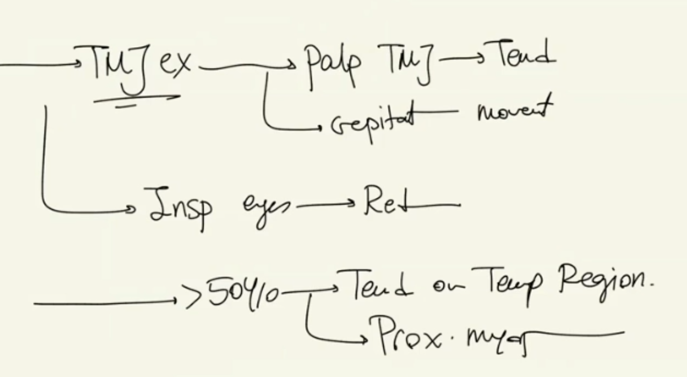
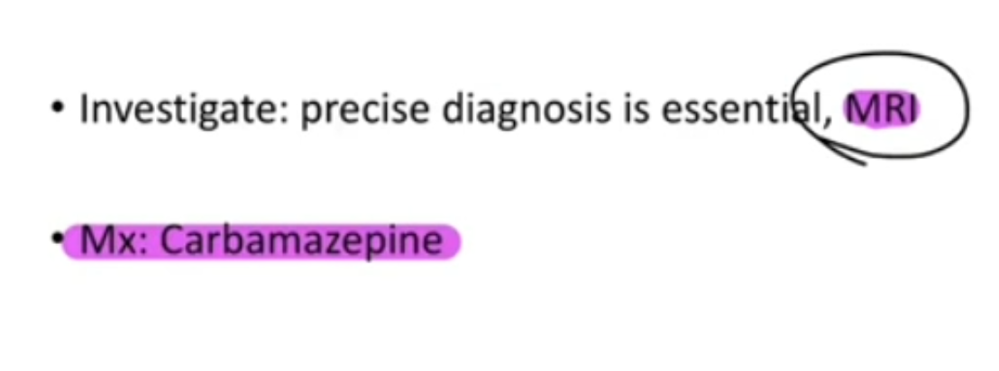
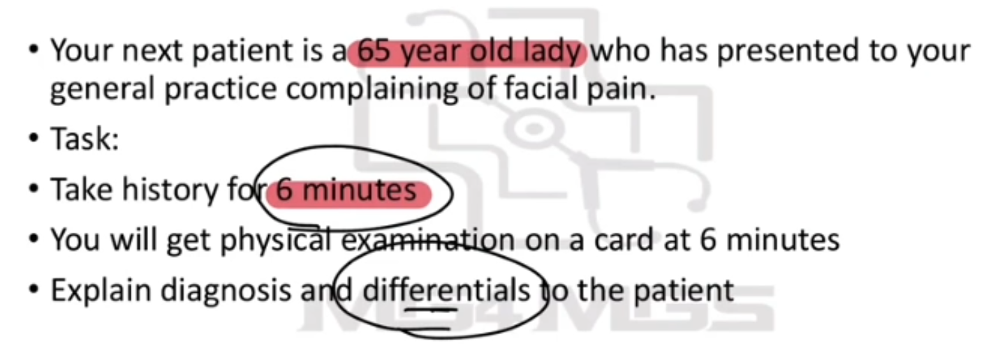
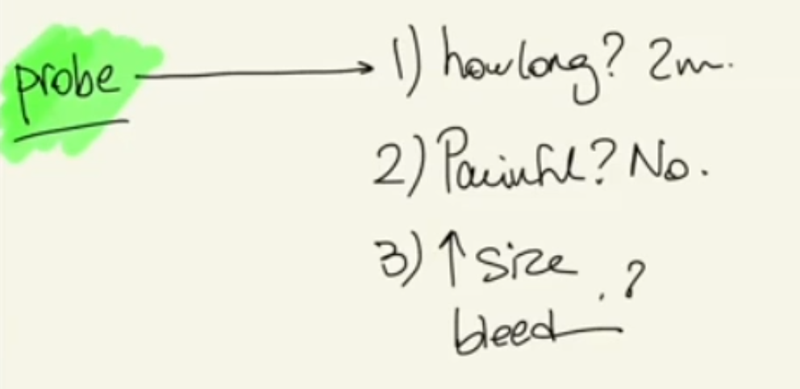
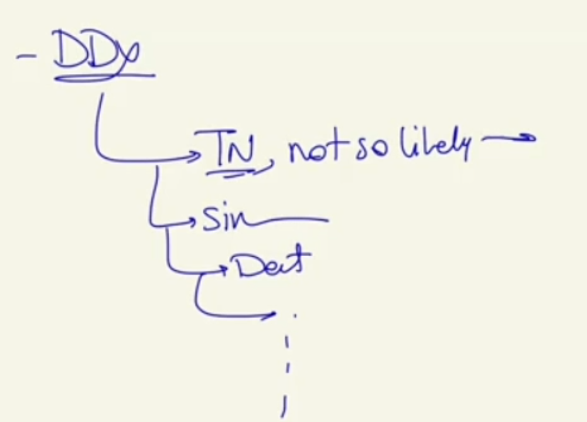
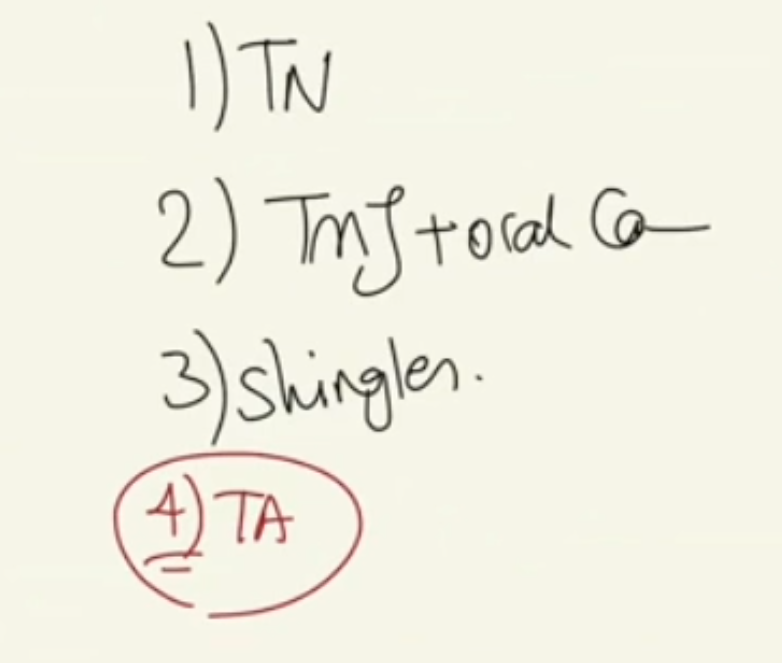

Facial Pain (Trigeminal Neuralgia / TMJ Dysfunction & Oral Cancer / Shingles)
Source: Dr. Amir workshop — Med workshop 2 - 2026 / CLASS 2 NEUROLOGY (Aug 2026 drop) · Specialty: neurology
Overview
Facial pain is a subtype of headache presentation and has appeared in the AMC clinical exam since 2019 with several evolving versions. The primary assessment area is history taking, so a broad, well-structured differential list is essential. There is no need for haemodynamic-stability screening at the start of a facial pain case.
Dr Amir notes three exam versions of the facial-pain cluster: (1) Trigeminal neuralgia, (2) TMJ dysfunction combined with oral/oropharyngeal cancer, and (3) Shingles (herpes zoster). Temporal arteritis is flagged as a likely future variation designed to catch candidates who do not screen for it.
Differential Diagnosis
Red flags (must exclude):
- Oropharyngeal cancer (anything in the mouth and back of the throat) and salivary gland cancer, especially parotid
- Brain tumour – in a trigeminal neuralgia case the first priority is to exclude a tumour compressing the trigeminal nerve; neurological symptoms mandate red-flag screening
- Temporal arteritis in patients over 50 years
Other differentials:
- Trigeminal neuralgia (secondary causes: brain tumour, multiple sclerosis, vascular loop compressing the nerve)
- Maxillary sinusitis (the most commonly involved sinus)
- TMJ dysfunction
- Dental infection
- Shingles
- Glaucoma
- Facial / ophthalmoplegic migraine
- Glossopharyngeal neuralgia (listed by John Murtagh; Dr Amir regards this as deep throat pain rather than true facial pain)
History Taking
Open the consultation with an empathetic open-ended question (for example, tell me more about your facial pain), respond to the patient concern, then move to structured pain assessment.
Pain assessment (SIQORAA):
- Site – one-sided or both sides; whether it is fixed to one side (persistent strictly unilateral pain is concerning)
- Intensity – severity on a numeric scale
- Quality – sharp/stabbing/electric-shock versus dull ache (do not lead the patient)
- Onset / timing – duration, constant versus intermittent, progression, duration of each episode
- Radiation – to head or neck
- Aggravating and alleviating factors – talking, wind on the face, chewing, touch, smiling, sneezing
- Affect – impact on daily function (chronic pain)
Trigeminal neuralgia pain is classically a sudden stab lasting a fraction of a second to about one second, very sharp, like an electric shock, triggered by any facial movement or a blow of wind.
Targeted differential questions:
- Brain tumour / raised ICP: headache history, pain waking from sleep, worse on coughing or sneezing, weakness, numbness, blurring of vision
- General cancer screen: weight loss, loss of appetite, lumps and bumps
- Oropharyngeal / salivary gland cancer: chronic non-healing mouth ulcer, swelling of cheeks or below the jaw
- Temporal arteritis (over 50): tender cord over the temporal region, blurred vision, pain on chewing, plus polymyalgia rheumatica (shoulder and hip pain)
- Maxillary sinusitis: fever, chills, post-nasal discharge
- TMJ dysfunction: pain worse on chewing, excessive chewing (gum, steak), clicking or cracking (crepitus) in the joint
- Dental infection: toothache, dental hygiene, last dental review
- Shingles: rash, fever, fatigue
- Glaucoma: red eye, watery eyes, blurred vision
- Facial migraine: nausea/vomiting, photophobia and phonophobia, aura
If time remains, complete SADMA (smoking, alcohol, drugs, medications, allergies), past medical history and family history.
Physical Examination (PEFE)
Core examination: neurological. Relevant examinations: ENT (sinusitis, dental, oropharyngeal and salivary gland cancer), lymph node examination, TMJ (musculoskeletal), temporal artery if over 50, and eyes if indicated.
- General appearance: level of consciousness (alert or drowsy), rashes (shingles), ptosis
- Vital signs: including temperature (infection)
- Cranial nerves: trigeminal (V) – sensation over frontal, maxillary and mandibular divisions; motor branch by bulk and tone of masseter and temporalis. Glossopharyngeal (IX). Fundoscopy.
- ENT: sinus tenderness; throat/mouth inspection for dental caries, mouth ulcers, posterior throat masses, post-nasal discharge; salivary and parotid gland examination; cervical lymph nodes
- TMJ: palpate for tenderness and crepitus on opening/closing the jaw
- Eyes: inspect for redness
- If over 50: temporal region tenderness and proximal myopathy (polymyalgia rheumatica)
Teaching point: a normal examination does not exclude trigeminal neuralgia – most patients have a normal trigeminal nerve examination and normal corneal reflex.
Version 1 – Trigeminal Neuralgia
History: sharp, stabbing, electric-shock pain, strictly one-sided, lasting 1–2 seconds, worse on chewing and on any facial movement including a blow of wind. The remainder of the history and the cranial nerve examination are normal. Diagnosis remains trigeminal neuralgia despite a normal examination.
Secondary causes to exclude: brain tumour and multiple sclerosis (compression of the nerve); most cases are due to a vascular loop. MRI is arranged. According to guidelines the first-line treatment is carbamazepine.
Explanation to patient: one of the nerves coming directly from the brain (the trigeminal nerve, 5th cranial nerve) is under pressure, producing one-sided sharp electric-shock pain triggered by facial movement.
Version 2 (2025) – TMJ Dysfunction with Oral Cancer
Pain for 6–8 weeks, one side, in front of the ear, dull ache, 5–6/10, worse on chewing, interfering with work. On probing: unintentional weight loss (3–5 kg over 2 months) and a painless, non-healing mouth ulcer present for 2 months. History of chewing a tough steak triggered the pain, located over the TMJ. Smoking history: 1 pack per day for 20 years.
Examination: 0.5 cm mouth ulcer with white induration, no bleeding; neurological examination, temperature, dental examination and sinus tenderness all normal.
This is a multiple-findings case – the diagnosis is both TMJ dysfunction and oral/oropharyngeal cancer. Candidates who only recall the script and fail to explore the ulcer and rule out red flags will miss the cancer.
Version 3 (2025 Pilot / Feb 2026) – Shingles
The patient shows non-verbal pain cues (offer analgesia). Pain is one-sided; site indicated over the forehead. A lump behind the ear (lymphadenopathy) may be reported. On probing about rash: painful blisters. Examination provides a photograph of one-sided vesicular rash on the frontal (V1) region that does not cross the midline, sometimes with ruptured vesicles.
Diagnosis: shingles (reactivation of the varicella-zoster / chickenpox virus). Reasons: severe burning one-sided pain plus a one-sided vesicular rash that does not cross the midline. Immunosuppression / diabetes key-point questions are de-emphasised so as not to over-signal the answer to the examiner.
Case Figures


















🔬 Expert Review & Enhancements
Reviewed by: history-taking-expert (Australian clinical supervisor) · fact-checked against the irStudy medical textbook RAG index.
✏️ Corrections
The Australian standard is the 0-10 numeric rating scale where 0 = no pain and 10 = worst imaginable pain. Use 0-10 for documentation and to allow a genuine zero (no pain) response.
Per eTG, start an oral antiviral (valaciclovir 1 g tds or famciclovir 500 mg tds for 7 days) ideally within 72 hours of rash onset, plus analgesia. Frontal/ophthalmic (V1) involvement, particularly a Hutchinson sign (vesicle on the nose tip / nasociliary branch), mandates same-day ophthalmology review to prevent herpes zoster ophthalmicus complications.
⭐ Suggested Enhancements
🏷️ Metadata
📚 Reference Citations (RAG)
Churchills Pocketbook of Differential Diagnosis p.123 qdrant:deb1d62e-9e5b-4d71-8602-b1541919658e
Churchills Pocketbook of Differential Diagnosis p.107 qdrant:efd77015-7c3e-4212-8a60-24109fecf13b
Oxford Handbook of Emergency Medicine 5th Edition (2020) p.413 qdrant:b07185ed-730a-447e-8210-29d01e63879b